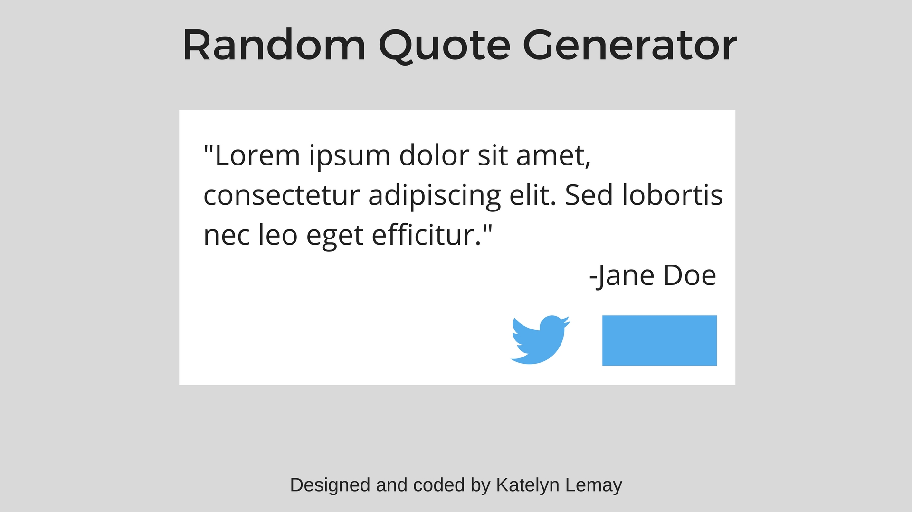

Random Quote Generator
design | project management | coding with JavaScript

katelynlemay.com/random-quote-generator
built with Javascript and Bootstrap 4.0
Overview
As part of my freeCodeCamp Front End Development certificate, I was asked to build a random quote generator which met the following requirements:
- User can click a button to see a new quote
- User can click a button to tweet out a quote
Process
For the sake of organization, I broke this project up into 5 parts:
- Brainstorm
- Collect and organize quotes
- Design the UI
- Write the code
- Test, Evaluate, and Redesign
For a detailed account of what I did for each of these steps, check out the Medium post I wrote about this project.
Wireframe
I wanted a simple, text-focused design that would allow users to easily read the quote without being distracted by other design elements:
Quote database
I used a simple Google Spreadsheet to collect and check quotes for a character count. I thought about using an API, but wanted to be able to easily control for quote content and length.
JavaScript Code
To sum it up, I wrote code that:
- Stores quotes in an array
- Generates a random number, which is less than or equal to the array length
- Uses that random number to select a quote from the array and place it in a designated area on the web page
- Allows the user to tweet the quote by clicking a button
You can see the code in the CodePen I set up for this project.
Results
You might have noticed that the final page looks a little different from my wireframes. As it turns out, the right-aligned quote attribution and buttons looked strange with a longer author name. Plus, I didn’t like the way the buttons jumped from the right of the box to the center as the screen was being resized. I moved the attribution to line up with the text, and put the buttons in the center.
I had some friends test out the quote generator on a variety of devices, and thankfully no one ran into any issues! I did discover a few things I’d like to improve in the next iteration.
Next steps
Of course, a designer’s work is never done. Some things I’d like to fix or add in the future include:
- A way for users to suggest quotes for the database
- A more sustainable way of storing and accessing quotes (20 quotes stored in an array like this is fine, but what about 200? 2,000? 20,000?)
- On mobile devices, the “New Quote” button remains in focus after it is tapped — the script should remove focus after a new quote is loaded
- Right now, the “default” quote is the same every time a user visits the page, since the function is tied to the click of the button. I would like to have a different quote appear each time the page is visited
- Since the quotes are different lengths, the text box changes size and the “New Quote” and Tweet buttons jump around. The position of these buttons should remain consistent
Overall, I had a lot of fun working on this project, and I look forward to continuing to improve my JavaScript skills!